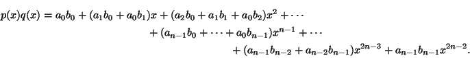

Next: Fourier Series
Up: The Fast Fourier Transform
Previous: The Fast Fourier Transform
Contents
Index
Multiplying Polynomials
Suppose we have two polynomials
| p(x) = a0 + a1x + a2x2 + ... an - 1xn - 1 and q(x) = b0 + b1x + b2x2 + ... bn - 1xn - 1, |
(6.1) |
each of degree n-1. We consider the problem of computing their
product

As written, this product involves 2n - 1 terms and a total of
2(1 + 2 + ... + n - 1) + n = n2
multiplications to compute all the coefficients. A natural question
then arises as to whether we can manage with fewer multiplications.
The aim of this section is to show that the work can be suitably
re-arranged so that only
O(n log n) multiplications are needed. The
constant in the
O(n log n) is really quite small; unlike
Strassen's
method of matrix multiplication, the underlying algorithm is of great
practical importance.
The idea is simple, although we don't discuss it directly in this
form. In order to determine p(x)q(x), a polynomial of degree
2n - 2, it is enough to know its value at 2n - 1 points. Each of
p(x) and q(x) can be determined at a fixed set of 2n - 1 points,
and so the product polynomial can be determined at these points with
2n - 1 multiplications in
 or
. Thus provided we can
efficiently evaluate each polynomial at the 2n - 1 points, and then
reconstruct the product polynomial from its 2n - 1 known values, we
have another way of multiplying the two polynomials.
or
. Thus provided we can
efficiently evaluate each polynomial at the 2n - 1 points, and then
reconstruct the product polynomial from its 2n - 1 known values, we
have another way of multiplying the two polynomials.
Next: Fourier Series
Up: The Fast Fourier Transform
Previous: The Fast Fourier Transform
Contents
Index
Ian Craw
2001-04-27